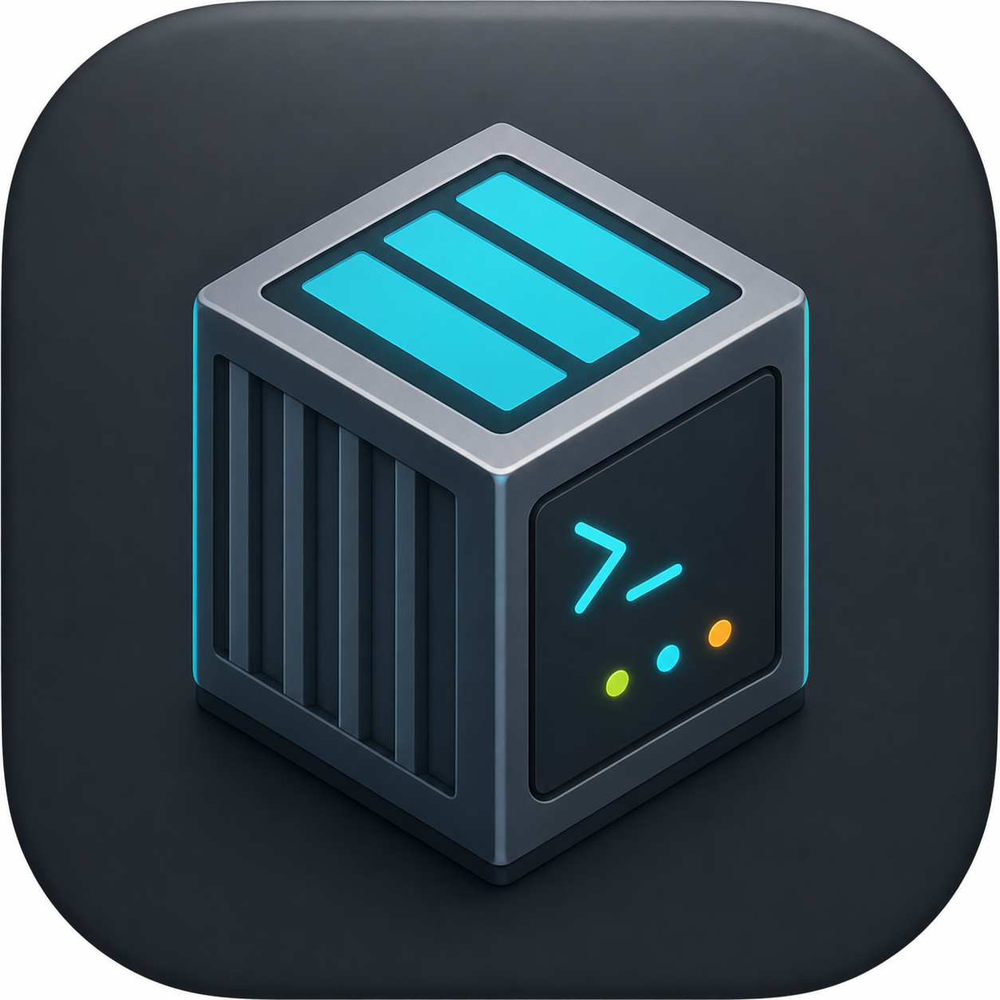
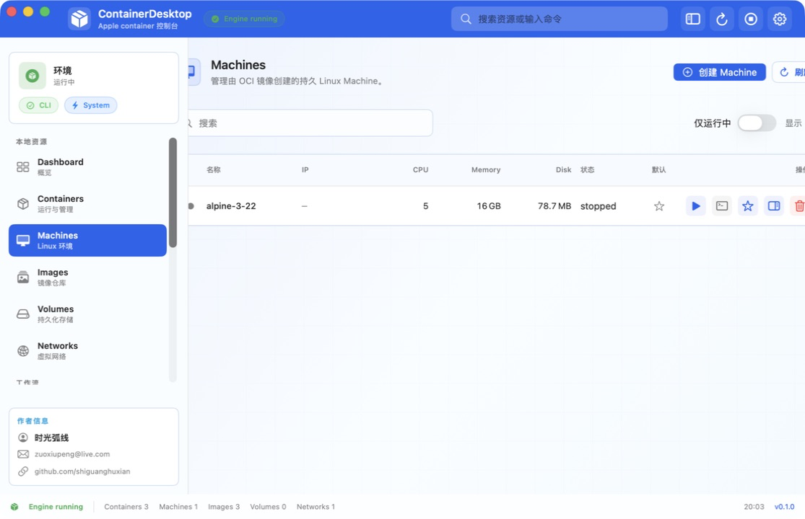

容器详情
启动、停止、日志、Inspect JSON、Stats、Files 和 SwiftTerm Exec 终端集中在详情页。

ContainerDesktop
面向 apple/container 的原生控制台
把容器、Machine、镜像、Compose、Registry、日志和系统配置收束到一个 macOS 桌面工作台里。
CLI-first, desktop-fast
ContainerDesktop 不隐藏底层命令。它把 apple/container 的 JSON 输出、长任务、交互式终端和配置文件编辑组织成可扫描、可重复执行的桌面工作流。
真实运行截图
控制面板
启动、停止、日志、Inspect JSON、Stats、Files 和 SwiftTerm Exec 终端集中在详情页。
创建和管理轻量 Linux Machine，支持原始 Inspect、日志和内置 Shell。
添加 compose 文件，展开服务和容器，执行 build、up、down，并查看任务输出。
登录镜像仓库，浏览 Docker Hub 与 Registry v2 tags，查看 tag 元数据并直接 Pull。
聚合容器日志、boot 日志、系统日志和 stats 快照，适合排障和状态巡检。
把常见 Docker 命令改写为 container / container-compose 命令，迁移时少猜参数。
独立分发
打开 Release 0.1.0，下载最新的 zip 或 dmg 产物。
解压并移动到 Applications，首次打开时按 macOS 安全提示确认。
安装 apple/container；Compose 工作流再安装 container-compose。
container system start
container system status
container-compose version运行要求